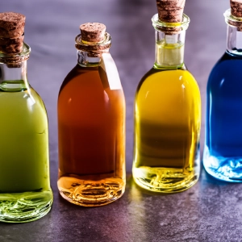

Gin fremstilles ved destillation af en neutral kornalkohol sammen med botanicals, der giver spiritussen dens karakteristiske smag. De vigtigste botanicals inkluderer enebær, koriander, citrusskal, kvanrod og angelikarod, selvom der kan anvendes mange andre urter og krydderier for at skabe forskellige smagsprofiler.
Der findes flere typer gin, der varierer i smag og produktionsmetode. London Dry Gin er kendt for sin tørre smag og skarpe enebærnoter og er ideel til cocktails. Plymouth Gin er en anden klassisk stil, der er lidt mere fyldig og sødere end London Dry. Derudover findes der moderne ginvarianter, der eksperimenterer med forskellige botanicals og destillationsmetoder.

Der findes flere typer gin, der varierer i smag og produktionsmetode. London Dry Gin er kendt for sin tørre smag og skarpe enebærnoter og er ideel til cocktails. Plymouth Gin er en anden klassisk stil, der er lidt mere fyldig og sødere end London Dry. Derudover findes der moderne ginvarianter, der eksperimenterer med forskellige botanicals og destillationsmetoder.